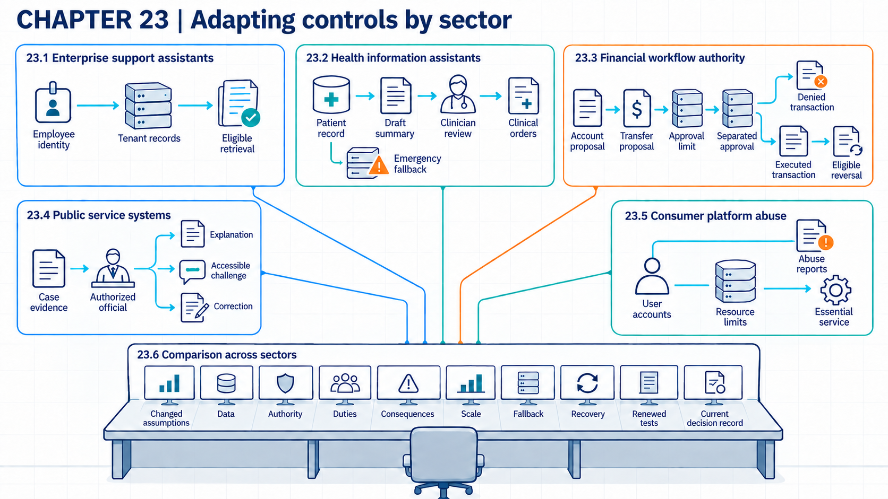

23 Adapting controls across sectors
A transfer review states which assets, duties, permissions, and consequences change before applying earlier controls to a new sector.
A design can use the same model and text interface in several settings while needing different controls. A retrieval filter can keep customer records apart, but it does not determine who may make a clinical decision or approve a payment. Preparing a proposed transfer is also different from authorizing its execution. Comparing users, data, authority, and consequences shows which parts of an earlier design can be reused and which need new evidence.
Suppose an organization has built one assistant design and now wants to offer it in enterprise support, health, finance, public services, and a consumer platform. The five examples below are invented. They isolate design differences and do not establish legal compliance, clinical safety, financial fitness, or product security. Each is compared on the same fields: user population, data, application authority, applicable duty, possible consequence, scale, fallback, and recovery path. A changed field reopens the related control and evidence claim. Earlier records remain useful for unchanged fields only after the reviewer checks that the changed conditions do not affect them.

23.1 Customer separation in enterprise assistants
An enterprise assistant may answer a policy question or retrieve customer records through the same text interface. The review first identifies whose records the employee may read. A tenant is a customer organization or group whose records the service separates from others. The tenant and retrieval boundaries must constrain both the documents returned and any account action the application can request.
The NIST Privacy Framework1 calls for inventories of systems, roles, people, data actions, purposes, data elements, processing environments, and mapped interactions. The 2026 OWASP list2 separates prompt injection, sensitive information disclosure, excessive agency, misinformation, and vector or embedding weaknesses for analysis. These frameworks organize the review. They do not show that a weakness exists in the example assistant or that a proposed control works.
The request path authenticates the employee and filters eligible records before retrieval. The application labels the source and generates an answer. It sends any proposed account action to a separate authorization service. A disputed answer is an answer whose correctness or authority is challenged and resolved outside the model. It returns to an authoritative record or responsible specialist.
Control review. The system of record checks the employee identity and tenant eligibility before returning a document, while the action service checks any account operation separately. Tests report denied cross-tenant requests over all unauthorized pairs and disputed answers corrected after review over all disputed answers reviewed. Per-request checks, source links, and specialist review add latency and staff cost. Cached records or an alternate connector can bypass the intended route. These tests also cannot establish answer correctness for unreviewed topics. Recovery removes exposed context and revokes affected access. It restores the accepted connector and routes disputed work to the ordinary support process.
This case carries relatively little risk of physical harm. It supplies a comparison point for health information, where an answer can influence care.
23.2 Health data and clinical authority
A health assistant changes the stakes when it reads regulated records or appears to direct care. Electronic protected health information means electronic health information within the legal scope of the Health Insurance Portability and Accountability Act (HIPAA). The HIPAA Security Rule3 requires covered entities and their business associates to implement administrative, physical, and technical safeguards for that information. Covered entities include health plans, health care clearinghouses, and health care providers conducting the specified electronic transactions. The duties therefore depend on the organization’s role and the information involved. They include role-appropriate access, which limits access to what a person’s assigned work requires. The Department of Health and Human Services’ August 7, 2026 summary4 explains the requirement for periodic technical and non-technical evaluation and assessment of whether changes such as new technology or newly recognized risks require a new evaluation. These duties address information security compliance. They do not establish clinical safety or model accuracy.
Clinical authority is permission and responsibility to make or direct a clinical decision. The example assistant may summarize an authorized patient’s record for a clinician, but it has no clinical authority. The workflow must not treat its text as a diagnosis or prescription, and its account has no permission to change an order. It can still generate text that sounds like clinical direction, which is why labeling and qualified review matter. Identity, record scope, output labeling, clinical review, correction, and emergency fallback are separate control points. Clinical safety, medical-device scope, and evidence for human review still require use-specific regulation and clinical evaluation.
In the proposed health workflow, the health-record system checks clinician identity, patient relationship, and requested fields. The clinical workflow treats the output as a draft and permits only an authorized clinician to enter an order. Tests report wrong-patient disclosures over all unauthorized patient pairs and unsupported statements over all reviewed summaries. Access checks and clinical review take time and can delay care. Copied text, stale role data, or use outside the workflow can bypass the controls. If something goes wrong, staff remove the draft and correct the record. The established clinical or emergency path stays active while they investigate any affected decision. A passing information-security test does not establish clinical safety or legal compliance.
Financial authority provides the next comparison, because the system may start a money transfer, and some transfers cannot be undone.
23.3 Payment authority in finance
A financial assistant may classify an alert. Other configurations may prepare or approve a transfer. Those acts need different authority. Transaction authority is permission to initiate, approve, modify, or reverse a financial action.
Under EU AI Act Annex III, point 5(b)5, systems intended to evaluate a natural person’s creditworthiness or establish their credit score are listed as high-risk uses. The item expressly excludes systems used to detect financial fraud. That exclusion concerns this item, so it does not exempt every financial tool from the Act or other law. Article 6(3) can exclude a listed system from high-risk classification when it poses no significant risk of harm and meets one of the specified narrow-task conditions. Those conditions cover a narrow procedural task, improvement of completed human work, detection of decision patterns without replacing or influencing a completed human assessment without proper human review, or preparation for an Annex III assessment. The no-significant-harm test includes whether the system materially influences the decision outcome. Profiling means automated use of personal data to evaluate personal aspects of someone, such as their economic situation or behaviour. An Annex III system that performs profiling remains high-risk. The intended use and those conditions must be established before classifying the example deployment. The relevant Chapter III duties for Annex III systems apply from December 2, 2027, subject to scope and transition rules.
CSF 2.06 calls for identities to be authenticated and for permissions and authorizations to be defined, enforced, reviewed, and separated by duty. Those general outcomes do not define payment rules or reversal rights.
In the example workflow, the model can explain an alert and prepare a proposed action. The payment system checks whether execution is authorized. It verifies the employee identity, amount, approval limit, separation of duties, and current account state before execution. An approval limit sets the maximum value or action class an identity may approve. Logs connect proposal, approval, execution, and reversal. A reversal is a controlled action that restores an earlier financial state where the rules permit it. A real deployment would also require current banking, payment, securities, credit, and recordkeeping law for one jurisdiction.
Example
Financial action trace. The operating mode is inference with a proposed action, not autonomous execution. Employee E8 asks the assistant to prepare a 14,000 currency-unit transfer after reviewing a fraud alert. The assistant returns the proposed recipient, amount, and reason. The payment system then checks E8’s current identity and 10,000 approval limit. Preparing the proposal is allowed. Execution under E8’s authority is denied, and the proposal is escalated to an approver whose limit covers 14,000 and who meets the separation-of-duties rule. The observed result is no transfer and a linked proposal, denial, and escalation record. All values are invented. The trace shows that fluent financial text does not replace transaction authority.
The same payment system also checks separated approval, recipient state, and transaction status. It allows, denies, or holds each transfer and records the decision. Tests report unauthorized transfers over all attempted restricted transfers and mistaken denials over all allowed cases. Independent approval and reversal capacity add cost and delay. Shared credentials, a second payment route, or a stale limit can bypass the path. Recovery cancels pending work and reverses eligible transactions. It freezes affected credentials and escalates irreversible loss. A zero-failure test says nothing about fraud or operational errors it did not include.
The public-service case adds legal effects, explanation, and challenge rights.
23.4 Legal effects in public services
A public service may affect access to benefits or a person’s legal status. It can also influence emergency response or access to justice. Some of these outcomes are a legal effect: a change to a person’s legal rights, duties, or status.
EU AI Act Annex III7 lists specific intended uses, including decisions on essential public assistance, emergency-call classification and dispatch, specified law-enforcement and migration tasks, assistance in applying law to facts, and influencing elections or voting. Public ownership alone is not the classification test. Law-enforcement and migration categories require that the use be permitted under relevant law. The migration identification item excludes travel-document verification, and the election item excludes administrative or logistical tools whose outputs people are not directly exposed to. Article 6’s classification conditions and exceptions still apply. The relevant Chapter III duties for Annex III systems apply from December 2, 2027, subject to the Act’s scope and transition rules.
Article 868 gives an affected person a right to obtain clear, meaningful explanations from the deployer of the AI system’s role in a decision and the decision’s main elements. The decision must be based on an Annex III high-risk system’s output, excluding point 2 critical-infrastructure systems. It must produce legal effects or similarly significantly affect the person in a way they consider adverse to their health, safety, or fundamental rights. Paragraph 2 preserves exceptions or restrictions under EU law or national law consistent with EU law. Paragraph 3 applies the right only to the extent it is not already provided under EU law. Article 86 follows the general August 2, 2026 application date, rather than the delayed Chapter III dates. Article 111 transition rules and the facts of the decision must also be checked. This is not a general right to explanations for every public-service output.
The example service keeps the AI output as reviewable input to an authorized decision process. The record identifies the legal basis, evidence, human authority, explanation route, correction path, accessibility needs, and appeal mechanism. Two of these terms need care. Contestability is the ability to challenge a decision and seek correction or review. Accessibility is the ability of people with differing needs to use the service.
The case-management system checks the legal basis, required evidence, authorized official, notice, and challenge status before a consequential decision takes effect. It approves, returns, or blocks the decision and preserves the record used. Tests report complete notices and successful challenge routing over all consequential cases in scope, plus decisions corrected after review. Accessibility and human review add time and service cost. Informal channels, incomplete records, or inaccessible notices can defeat the process. Process evidence does not prove the underlying decision was lawful or correct. So recovery pauses the effect where permitted and corrects the record, and the person then enters the established review or appeal path.
This setting stresses bounded public authority. The consumer-platform case changes the scale and opens access to a broad public user population, which shifts attention toward abuse volume and resource limits.
23.5 Consumer-scale abuse
An open consumer platform receives high request volume from users whose identity, intent, and content are uncertain. Account abuse is unauthorized or deceptive use of a user account. Impersonation and automated sign-up can occur alongside harmful content. Tool misuse or resource exhaustion may follow even when each request appears minor.
OWASP9 describes its August 2026 Large Language Model (LLM) Top 10 as a community guide to critical risks in LLM-powered applications. The 2026 OWASP list10 treats excessive agency and unbounded consumption as distinct application risks. The list supplies a taxonomy. Prevalence and mitigation effectiveness require separate evidence.
The application can bind rate limits to accounts, devices, payment state, and action classes. It can require stronger verification before consequential actions and give users a reporting path. A limit of one hundred requests per hour remains only a design value until load and abuse tests show its effects on legitimate work, attack cost, and service availability.
Example
Rate-limit comparison. Suppose a test replays the same timestamped 1,000 ordinary requests and 500 automated abuse requests under limits of 50, 100, and 200 requests per account per hour. Account assignments and request order stay fixed across runs. Before seeing results, the team requires at least 80% of abuse requests to be blocked while no more than 2% of ordinary requests are blocked. These are illustrative policy thresholds, not industry benchmarks.
Assume the replay produces the following counts. At 50, the gateway blocks 450 abuse requests and 80 ordinary requests: 90% abuse blocking but 8% ordinary blocking, which fails the ordinary-work limit. At 100, it blocks 410 abuse and 15 ordinary requests: 82% and 1.5%, meeting both thresholds. At 200, it blocks 300 abuse and 5 ordinary requests: 60% and 0.5%, failing the abuse threshold. Under this test and these two criteria, 100 is the only qualifying candidate.
That result supports taking 100 forward to load and account-switching tests. It does not establish a production setting: the replay has not supplied queue-time or infrastructure-cost results, and fixed account assignments do not test attackers creating or rotating accounts. A changed demand pattern, including a legitimate support surge, can also change the ordinary-work cost.
The gateway checks account, device, payment state, request rate, and action class before admitting work, then allows, slows, challenges, or blocks the request. The replay above supplies its measures: blocked abuse over all simulated abuse and blocked ordinary work over all ordinary requests, with queue time and infrastructure cost. Stronger checks increase user friction and support demand. Distributed accounts or shared infrastructure can bypass or overwhelm the limit. The replay also cannot estimate real abuse prevalence or show how the limit holds at larger scale. Recovery reduces expensive features and protects essential paths. Legitimate users receive a support route.
23.6 Reassessing controls across settings
Each case uses the same system-mapping method, but its assets, permissions, duties, scale, consequences, oversight depth, and recovery evidence differ. A transfer analysis compares what changes when a design enters another setting. One of the fields it compares is oversight depth, which combines the frequency, authority, and technical detail of human review.
The AI Risk Management Framework11 states that risk management is tailored to context and that priorities account for organizational goals, affected people, legal requirements, and available resources. CSF 2.012 also states that control choices vary with risk, tolerance, mission, technology, and requirements. These sources support tailoring. They do not rank the example cases or make their controls equivalent.
The method stays constant while each case changes the facts. Enterprise support stresses tenant and retrieval separation. Health adds regulated records and clinical boundaries. Finance adds transaction authority and reversal. Public services add legal effects and contestability. Consumer platforms add open access and scale.
Sector comparison. Each row below describes a different setting for the recurring design and changes several connected conditions. It does not establish legal compliance or rank sectors.
| Setting | Main task | Authority boundary | Concrete test | Decision evidence |
|---|---|---|---|---|
| Enterprise support | Answer a policy or case question | Employee may read only eligible tenant records | Cross-tenant retrieval attempt | Source identifiers, denial logs, disputed-answer route |
| Health information | Summarize an authorized record | No clinical decision authority or permission to change an order | Wrong-patient and unsupported-advice cases | Access record, clinician review, correction and fallback |
| Financial workflow | Explain an alert and prepare a transfer | Payment system enforces amount and separated approval | Over-limit transfer proposal | Proposal, denial, approval, execution, and reversal records |
| Public service | Prepare reviewable input | Authorized official makes the consequential decision | Missing evidence and challenge request | Legal basis, evidence, explanation, correction, and appeal path |
| Consumer platform | Answer open user requests | Account and action class set resource limits | Ordinary-load and automated-abuse replay | Rate, blocked work, abuse cost, reports, and availability |
The table changes the user population, data, authority, consequence, and expected evidence while keeping the mapping method. A control can be reused when its assumptions still hold in the new setting. Changed data or scale may require new tests even when the enforcing component and rule stay the same.
Transfer control. Architecture reviewers compare the source and target setting for data, identity, authority, duty, consequence, operating scale, fallback, and recovery. They accept a control unchanged only when its enforcing component and checked state remain valid. The measure is retested transferred controls over all controls reused in the target setting. Reassessment adds delivery and specialist cost. Surface similarity can hide a changed legal or physical condition. Successful transfer of one control does not validate the rest of the design. If a problem appears, recovery withdraws the transferred approval and returns the task to the prior setting or manual route.
The same question returns in Chapter 24 (Reassessing security after technology changes), where exposed devices, distributed training, physical action, persistent agents, and frontier capabilities change the assumptions themselves.
Note
Chapter checkpoint. Move the enterprise support assistant into the health-information setting. Which parts of the earlier design can remain, and which decision must be reopened first?
Answer. Identity checks, source links, retrieval filtering, and a disputed-answer route can remain as candidate controls. Their tests must use health-record roles and data. Authority must be reviewed first. An employee-support answer cannot become clinical direction merely because the same model and retrieval pattern are used. The organization needs current legal scope, clinical evaluation, authorized oversight, correction, and emergency fallback before approving the changed use.
NIST, Privacy Framework: A Tool for Improving Privacy through Enterprise Risk Management, version 1.0, NIST CSWP 10 (2020), Appendix A, Table 2, Identify-P function, ID.IM-P1 through ID.IM-P8, printed p. 20, source.↩︎
OWASP GenAI Security Project, OWASP GenAI LLM Top 10 2026, final source entries LLM01, LLM02, LLM03, LLM07, LLM09, descriptions and prevention or mitigation sections, repository revision 7e144e05142b. These entries identify risk paths and recommendations. They do not measure their prevalence or control effectiveness.↩︎
U.S. Department of Health and Human Services, Summary of the HIPAA Security Rule, reviewed August 7, 2026, “Introduction,” “General Rules,” “Administrative Safeguards,” and “Technical Safeguards,” including its references to 45 CFR 164.308 and 164.312, source.↩︎
U.S. Department of Health and Human Services, Summary of the HIPAA Security Rule, reviewed August 7, 2026, “Administrative Safeguards,” “Evaluation,” including its reference to 45 CFR 164.308(a)(8), source.↩︎
European Parliament and Council, Regulation (EU) 2024/1689 (Artificial Intelligence Act), OJ L, 2024/1689 (July 12, 2024), consolidated text of July 27, 2026, Annex III, point 5(b), and Articles 3(52), 6(2)-(4), 111, and 113, current text, as amended by Regulation (EU) 2026/1744, OJ L, 2026/1744 (July 24, 2026). The consolidation is a documentation tool. The published Official Journal acts control. The profiling definition follows Article 4(4) of Regulation (EU) 2016/679, as referenced by AI Act Article 3(52).↩︎
Cherilyn Pascoe, Stephen Quinn, and Karen Scarfone, The NIST Cybersecurity Framework (CSF) 2.0, NIST CSWP 29 (2024), Appendix A, PR.AA-03 and PR.AA-05, printed pp. 19–20, source.↩︎
European Parliament and Council, Regulation (EU) 2024/1689 (Artificial Intelligence Act), OJ L, 2024/1689 (July 12, 2024), consolidated text of July 27, 2026, Annex III, points 5-8, read with Articles 2, 6, 111, and 113, current text, as amended by Regulation (EU) 2026/1744, OJ L, 2026/1744 (July 24, 2026). The consolidation is a documentation tool. The published Official Journal acts control.↩︎
European Parliament and Council, Regulation (EU) 2024/1689 (Artificial Intelligence Act), OJ L, 2024/1689 (July 12, 2024), consolidated text of July 27, 2026, Article 86(1)-(3), read with Articles 2, 6, 111, and 113, current text, as amended by Regulation (EU) 2026/1744, OJ L, 2026/1744 (July 24, 2026). The consolidation is a documentation tool. The published Official Journal acts control.↩︎
OWASP GenAI Security Project, OWASP GenAI LLM Top 10 2026, resource published August 3, 2026, headings OWASP GenAI LLM Top 10 2026 and About, source.↩︎
OWASP GenAI Security Project, OWASP GenAI LLM Top 10 2026, final source entries LLM03, LLM06, descriptions and prevention or mitigation sections, repository revision 7e144e05142b. These entries identify risk paths and recommendations. They do not measure their prevalence or control effectiveness.↩︎
Elham Tabassi, Artificial Intelligence Risk Management Framework (AI RMF 1.0), NIST AI 100-1 (2023), section 1.2.3, “Risk Prioritization,” printed p. 7; Table 2, MAP 1 and MAP 5, pp. 26 and 28, source.↩︎
Cherilyn Pascoe, Stephen Quinn, and Karen Scarfone, The NIST Cybersecurity Framework (CSF) 2.0, NIST CSWP 29 (2024), Preface and section 1, printed pp. iv and 1–2, source.↩︎